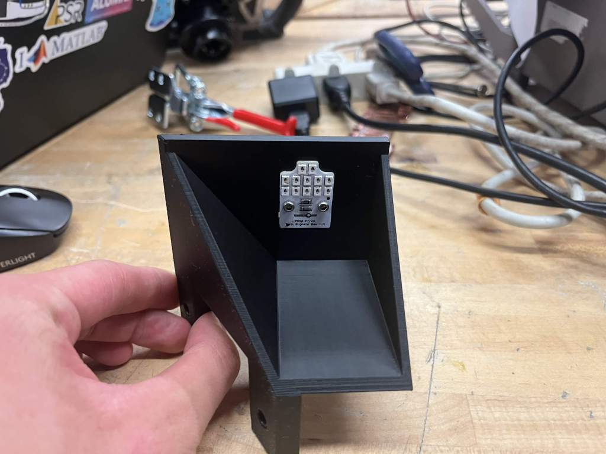

Light Mount
UWaterloo Midnight Sun
CAD PreviewDrag to pan · scroll to zoom
02Real-life prototype


The Design
A 3D printed mount designed to hold the front light PCBs in the UW Midnight Sun solar car.
Design Process
- Dimensioned the car and front light PCBs using calipers and measuring tape.
- Modelled the mount, aerobody and PCBs in SolidWorks to create accurate attachment and vibration constraints.
- Prototyped and reviewed the design with senior team members before manufacturing.
Results and Skills
- Reduced front light jittering by 30% and secured the lights to pass regulation angles.
- Applied CAD design, prototyping and peer review.
- Manufactured the part using Bambu Studio with dimensioning and tolerancing.